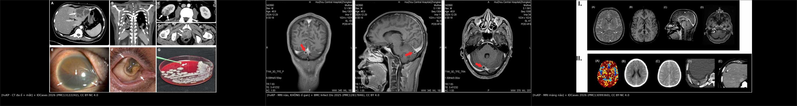
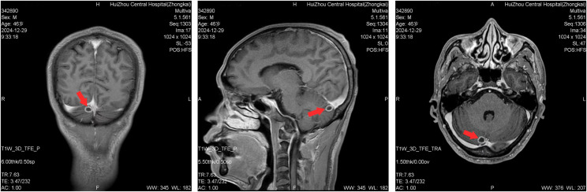
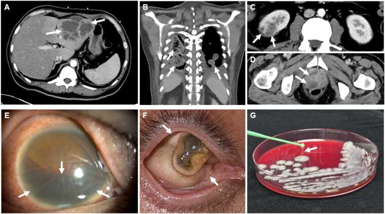
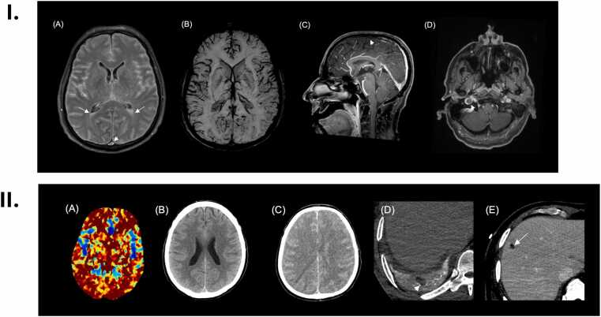

1422 — Nhiễm khuẩn huyết do Klebsiella pneumoniae tăng độc lực (hvKP) không có ổ gan: bản đồ ổ di căn ẩn và bộ ba tầm soát mắt–não–phổi
Tags: pattern:viem-nhiem pattern:ap-xe pattern:nhieu-o pattern:viem-noi-nhan pattern:ap-xe-nao pattern:viem-mang-nao pattern:di-can vung:gan vung:phoi vung:nao vung:mat vung:than vung:tuyen-tien-liet protocol:CT-nguc-bung-chau protocol:MRI-nao protocol:soi-day-mat protocol:cay-mau
Mức chắc chắn (certainty): tổng hợp y văn (literature synthesis) — tổng quan hệ thống 778 ca/376 báo cáo (2026, PMC13291180), đoàn hệ Vancouver 38 ca hvKP có PCR/giải trình tự (PMC13660691), meta-analysis viêm nội nhãn nội sinh (15 nghiên cứu/11.889 ca áp-xe gan, PMID 33035676; 17 nghiên cứu/219 ca, PMID 41483529), nghiên cứu carbapenem vs không carbapenem (236 ca, PMID 41251372), và ba ca nguyên văn có ảnh (PMC12817846, PMC13122242, PMC13099360). Số nào nguồn không đưa thì ghi "chưa rõ".
Câu chốt: không thấy áp-xe gan không loại trừ hvKP. Trong 778 ca hvKP được báo cáo, chỉ 39,0% có tổn thương gan — nghĩa là 475 ca (61,1%) không có ổ gan được ghi nhận, trong khi 46,1% có nhiễm khuẩn huyết và 22,9% có tổn thương não. Ổ di căn có thể là mắt, màng não/não, phổi, thận, tuyến tiền liệt, da–mô mềm và có thể im lặng. Vì vậy khi cấy máu ra K. pneumoniae ở bệnh nhân đái tháo đường/từ vùng dịch tễ, câu hỏi không phải "có áp-xe gan không" mà là "đã khám mắt, chụp não và phổi chưa". Nối 103 – Áp-xe gan do Klebsiella & hvKP (đọc CT gan, ngưỡng dẫn lưu), 1420 – Áp-xe gan + viêm nội nhãn nội sinh (thứ tự can thiệp mắt–gan) và 475 – Viêm nội nhãn nội sinh do vi khuẩn (cơ chế "tiền phòng im lặng").
1. Tổng quan bệnh học – cơ chế hình ảnh
1.1 hvKP là gì — định nghĩa đang dùng và ngưỡng định danh
- Hai dòng K. pneumoniae: cKP (classical, thường bệnh viện, đa kháng) và hvKP (hypervirulent, thường cộng đồng, người khỏe mạnh không suy giảm miễn dịch vẫn mắc). Tỷ lệ hvKP trong các chủng K. pneumoniae khoảng 15,2%, có nơi châu Á > 40% (PMC13291180).
- Định nghĩa thực hành (không có tiêu chuẩn duy nhất):
- Kiểu hình: string test dương khi khuẩn lạc kéo thành sợi > 5 mm (Vancouver dùng ngưỡng này, PMC13660691).
- Kiểu gen: mang iucA (aerobactin), iroB (salmochelin), peg-344, rmpA/rmpA2 (điều hòa nhầy) — bộ 5 gen được xem là dấu ấn mạnh nhất (PMC13291180, PMC13141873).
- Giải trình tự: Kleborate virulence score ≥ 3 được dùng làm chuẩn tham chiếu trong đoàn hệ Vancouver (PMC13660691).
- Giá trị của xét nghiệm: PCR (peg-344 + iucA trong đoàn hệ Vancouver) có độ nhạy 100%, độ đặc hiệu 98,8% so với giải trình tự; chỉ 13% ca hvKP được nghĩ tới lúc phân lập — tức 87% bị bỏ sót nếu chỉ dựa vào lâm sàng (PMC13660691). String test không đủ: độ nhạy 92% nhưng độ đặc hiệu chỉ 54,5%, PPV 82,1%, NPV 75%; 78% (28/36) chủng hvKP string test dương (cùng nguồn).
1.2 Sinh bệnh học — vì sao "không gan" vẫn di căn
- Vỏ polysaccharide K1/K2 chống thực bào và chống ly giải bổ thể; K1 38,4%, K2 27,3% trong 778 ca (PMC13291180). K1 là yếu tố nguy cơ độc lập của viêm nội nhãn nội sinh (PMID 33035676).
- Hệ thống siderophore: aerobactin (iucA), salmochelin (iroB), yersiniabactin — lấy sắt từ transferrin của vật chủ, giúp tăng sinh trong máu và xâm nhập mô.
- rmpA/rmpA2 làm tăng sinh nhầy (hypermucoid), tạo màng sinh học và kháng thực bào; đây là lý do ổ áp-xe nhầy, khó hút, dễ tái phát.
- Đường vào không nhất thiết là gan: đường niệu (ca 46 tuổi: UTI → nhiễm khuẩn huyết → màng não, không có ổ gan), phổi, tuyến tiền liệt, catheter, da–mô mềm. Từ máu, vi khuẩn bám vào mao mạch mắt, não, phổi, thận — nơi có giường mao mạch rộng và dòng chảy chậm.
- Vì sao ổ gan vắng mặt: có thể không bao giờ hình thành (đường vào khác), đã dẫn lưu/tự vỡ trước khi chụp, hoặc quá nhỏ dưới ngưỡng CT. Vì vậy "CT gan âm" không phải bằng chứng loại trừ.
1.3 Ngưỡng định lượng nằm lòng
| Chỉ số | Con số | Nguồn |
|---|---|---|
| Quần thể báo cáo | 778 ca / 376 báo cáo / 40 quốc gia; tuổi trung bình 55,67 ± 19,07 | PMC13291180 |
| Vị trí phân lập | máu 46,1% (359), gan 39,0% (303), phổi 35,0% (272), não 22,9% (178), mắt 16,8% (131), niệu–sinh dục 16,1% (125), da 15,3% (119), khác 11,3% (88) | cùng nguồn |
| Không có ổ gan | 475/778 = 61,1% (303 ca có gan) | tính từ cùng nguồn |
| Tử vong chung | 34,2% (200/585); hồi phục hoàn toàn 46,5%, di chứng 19,3% | cùng nguồn |
| Tử vong theo ổ | não 39,2%, phổi 38,0%, máu 36,3%, da 26,1%, niệu–sinh dục 18,6%, gan 17,1%, mắt 3,5% | cùng nguồn |
| Di chứng mắt | 66,4% (mù/giảm thị lực nặng) dù tử vong thấp | cùng nguồn |
| Tái phát | 19,0% (16/84); da 28,0%, máu 24,3%, ổ khác 50,0% | cùng nguồn |
| Chẩn đoán muộn | chỉ 13% ca hvKP được nghĩ tới lúc phân lập | PMC13660691 |
| Viêm nội nhãn nội sinh trong áp-xe gan | 4,5% (95% CI 2,4–8,2%); 15 nghiên cứu/11.889 ca | PMID 33035676 |
| Thị lực cuối ở viêm nội nhãn | 77,9% < 3/60; đái tháo đường 67,4% | PMID 41483529 |
| Kháng sinh | carbapenem không tốt hơn: tử vong 28 ngày 23,1% vs 10,3% (p = 0,016); OR đa biến 1,39 (0,47–4,10) | PMID 41251372 |
2. Mẫu hình + chẩn đoán phân biệt theo vị trí (Gamut)
- Mắt (131 ca): thể viêm nội nhãn nội sinh — mờ mắt, đau, hypopyon, viêm dịch kính; có thể không đau và bị bỏ qua. Ổ nguồn gan chỉ chiếm một phần; 4,5% áp-xe gan có viêm nội nhãn, nhưng hvKP không ổ gan vẫn có (đường niệu/phổi). K1 là yếu tố nguy cơ; 77,9% thị lực cuối < 3/60.
- Não/màng não (178 ca): áp-xe não (ổ viền ngấm thuốc, hạn chế khuếch tán), viêm màng não–não thất, huyết khối xoang/tĩnh mạch cảnh trong do viêm lan. Tử vong 39,2% — cao nhất trong các ổ. 50 ca chỉ có não (không gan, không phổi) — đây là nhóm dễ bỏ sót nhất.
- Phổi (272 ca): nốt/hang ngoại vi hai bên, thuyên tắc nhiễm khuẩn (septic emboli), áp-xe phổi; bệnh nhân có thể chỉ sốt và ho. Tử vong 38,0%.
- Gan (303 ca): áp-xe đa thùy, vách, khí trong ổ, ngấm viền; nhưng 39% không có — đừng dừng khảo sát khi gan sạch.
- Thận/tuyến tiền liệt (125 ca): áp-xe thận, áp-xe tuyến tiền liệt im lặng (ca 47 tuổi chỉ lộ ra trên Gallium-67 sau khi sốt kéo dài dù đã dẫn lưu gan).
- Da–mô mềm (119 ca): viêm cân mạc hoại tử, áp-xe dưới da, viêm bao gân — có thể là ổ vào hoặc ổ di căn.
- Mnemonic "M–N–P–T–D": Mắt, Não, Phổi, Thận/tuyến tiền liệt, Da — khám/chụp theo thứ tự này ở mọi ca hvKP bacteremia, kể cả khi gan âm.
3. Bảng so sánh phân biệt (ma trận đối chiếu)
| Thực thể (entity) | Hình ảnh điển hình | Chốt vào (rule-in) | Chốt loại (rule-out) | Gợi ý xác nhận |
|---|---|---|---|---|
| hvKP bacteremia KHÔNG ổ gan | Không có ổ gan trên CT; ổ di căn mắt/não/phổi/thận/tuyến tiền liệt | K. pneumoniae ở máu/dịch vô khuẩn + string test/PCR hvKP + ổ di căn | PCR âm và không có gen tăng độc lực → nghĩ cKP; cấy lại loại nhiễm bẩn | PCR 5 gen/WGS; khám mắt; CT ngực–bụng–chậu; MRI não |
| hvKP có ổ gan | Áp-xe gan đa thùy, vách, khí; ± ổ di căn | Áp-xe gan + K1/K2 + string/PCR dương | Không có vi khuẩn trong ổ (amip), thanh mạc đơn thuần → không phải hvKP | Chọc hút/cấy ổ; PCR; CT 4 pha |
| cKP bacteremia | Thường bệnh viện, catheter, đa kháng; ít ổ di căn | Cấy máu + kháng sinh đồ + không có gen hvKP | Có iucA/iroB/rmpA → hvKP dù string test âm | PCR/WGS; bối cảnh dịch tễ |
| Thuyên tắc phổi nhiễm khuẩn (từ viêm nội tâm mạc) | Nốt/hang ngoại vi hai bên, mạch nuôi; van tim có vegetation | Siêu âm tim có vegetation + cấy máu dương | Echo âm, không ổ van → nghĩ hvKP nguyên phát | Echo TTE/TEE; cấy máu |
| Di căn ung thư | Nốt phổi/cảnh, ổ não viền ngấm thuốc; không sốt, không cấy dương | Tiền sử ung thư + tổn thương đa ổ tiến triển | Cấy máu dương + sốt cao → nhiễm trùng | Sinh thiết; PET-CT |
| Áp-xe gan do amip | Ổ gan đơn độc, không vách, không khí; huyết thanh amip dương | Huyết thanh/ PCR amip dương; ổ "anchovy paste" | Cấy mủ có vi khuẩn + hvKP gen → áp-xe vi khuẩn | Huyết thanh amip; chọc hút |

Trái: CT đa ổ (gan, phổi, thận, tuyến tiền liệt) + mắt + string test. Giữa: MRI não ca hvKP không có ổ gan — nốt 10 mm ở tiểu não phải. Phải: MRI màng não–não thất + huyết khối xoang. Nguồn: IDCases 2026 (PMC13122242), BMC Infect Dis 2025 (PMC12817846), IDCases 2026 (PMC13099360) — CC BY-NC 4.0/CC BY 4.0. Ảnh ghép letterbox, không crop.3.1 Đọc hình ảnh theo ổ — dấu hiệu nào thật sự đổi xử trí
- Mắt: hypopyon, viêm dịch kính, ổ mủ dưới võng mạc trên soi đáy mắt; siêu âm B-scan khi không thấy đáy mắt. Không chờ mờ mắt mới khám — ổ ngoại vi có thể im lặng.
- Não: áp-xe = ổ viền ngấm thuốc + hạn chế khuếch tán trung tâm + phù quanh; viêm màng não = ngấm màng não mềm; não thất = mủ lắng/mức dịch–mủ, ngấm màng nội tủy. Huyết khối xoang = khuyết thuốc trên CTV/MRV — đừng bỏ qua khi có nhức đầu/giảm tri giác.
- Phổi: nốt/hang ngoại vi hai bên gợi ý thuyên tắc nhiễm khuẩn; mạch nuôi đến nốt (feeding vessel) là dấu phụ. Hang thành mỏng + mức khí–dịch có thể là áp-xe phổi.
- Thận/tuyến tiền liệt: ổ giảm đậm độ không đồng nhất, viền ngấm thuốc; tuyến tiền liệt dễ bỏ sót vì triệu chứng niệu dục kín đáo. Gallium-67/FDG-PET hữu ích khi sốt kéo dài và CT bụng–chậu âm (ca 47 tuổi).
- Gan: ổ giảm đậm độ đa thùy, vách, khí trong ổ, ngấm viền; nhưng không có ổ gan không loại trừ.
4. Protocol chụp + định danh + flowchart
4.1 Protocol chẩn đoán
- Cấy máu 2 bộ trước kháng sinh (nếu đã dùng kháng sinh, vẫn cấy và ghi rõ — ca 46 tuổi có cấy máu âm sau thuốc nhưng cấy dịch ổ dương).
- Trên chủng phân lập: string test > 5 mm + PCR iucA/iroB/peg-344/rmpA/rmpA2 (hoặc WGS/Kleborate ≥ 3). Không bỏ PCR vì string test âm (Se 92%, Sp 54,5%).
- Khám mắt trong 24 giờ ở mọi ca hvKP bacteremia; khám khẩn nếu mờ mắt/đau.
- CT ngực–bụng–chậu có cản quang (CT được dùng ở 92,0% ca trong tổng quan; MRI 32,8%, siêu âm 32,5%). Với ổ đầu–cổ/não: MRI não có DWI + chuỗi ngấm thuốc.
- MRI não khi: triệu chứng thần kinh mới, co giật, giảm tri giác, đau đầu dai dẳng, hoặc sốt không giải thích dù CT bụng âm. LP sau khi loại hiệu ứng khối/ phù não; đo áp lực mở, protein, glucose, tế bào, Gram/cấy, PCR mNGS nếu có.
- Siêu âm tim khi có tiếng thổi, thuyên tắc hệ thống, hoặc cấy máu kéo dài dương.
- Gallium-67 hoặc FDG-PET khi sốt kéo dài + CT/MRI âm; ca 47 tuổi chỉ Gallium-67 phát hiện áp-xe tuyến tiền liệt, dẫn tới chọc hút điều trị.
- Lặp CT 48–72 giờ nếu sốt không giảm sau dẫn lưu/kháng sinh — tìm ổ mới hoặc dẫn lưu chưa đủ.
4.2 Định danh / phân tầng
- Kleborate virulence score ≥ 3 (Vancouver) — dùng khi có WGS; không thay thế PCR tại chỗ.
- K1/K2 là yếu tố nguy cơ viêm nội nhãn nội sinh (K1) và độc lực; không phải tiêu chuẩn chẩn đoán.
- Không có RADS cho hvKP; phân tầng theo ổ di căn + độ nặng sepsis/APACHE II + khả năng kiểm soát nguồn.
flowchart TD
A[K. pneumoniae trong máu hoặc dịch vô khuẩn] --> B{String test > 5 mm hoặc PCR iucA/iroB/peg344/rmpA?}
B -->|Có| C[hvKP: khám mắt 24 giờ + CT ngực–bụng–chậu + MRI não nếu có triệu chứng]
B -->|Không| D[Vẫn làm PCR/WGS nếu bệnh cảnh xâm lấn; string test âm KHÔNG loại trừ]
C --> E{Có ổ di căn?}
E -->|Mắt| F[Nhãn khoa khẩn: tiêm nội nhãn ± cắt dịch kính]
E -->|Não| G[MRI DWI + kháng sinh ngấm CNS + dẫn lưu nếu hiệu ứng khối]
E -->|Phổi| H[CT ngực + dẫn lưu ổ lớn nếu có]
E -->|Thận/tuyến tiền liệt| I[CT/US + dẫn lưu ổ]
E -->|Không| J[Theo dõi 48–72 giờ; lặp CT nếu sốt kéo dài; Gallium/PET nếu còn sốt]
C --> K[Kiểm soát nguồn + kháng sinh theo kháng sinh đồ; carbapenem không ưu thế mặc định]
4.3 Điều trị — điều gì có số liệu, điều gì còn tranh luận
- Kiểm soát nguồn là trụ cột: trong 488 ca có dữ liệu điều trị, 62,1% được phẫu thuật/can thiệp + kháng sinh, 34,6% chỉ kháng sinh, 3,3% chỉ phẫu thuật/can thiệp (PMC13291180). Tỷ lệ phối hợp cao ở mắt 80,5%, gan 74,4%, da 74,5%, máu 67,3%.
- Dẫn lưu ổ gan: có lợi khi ổ ≥ 5 cm (dẫn qua tổng quan, Nie 2022); dùng catheter lớn nhất có thể vì mủ nhầy dễ tắc (PMC13141873). Ổ não: dẫn lưu khi có hiệu ứng khối/ổ lớn; ổ mắt: tiêm nội nhãn + cắt dịch kính sớm (đặc biệt khi mủ đặc, thị lực rất kém).
- Kháng sinh: carbapenem không tốt hơn non-carbapenem ở hvKP bacteremia (tử vong 28 ngày 23,1% vs 10,3%, OR 1,39; 0,47–4,10; cả ở APACHE II ≥ 15) — chọn theo kháng sinh đồ, không mặc định carbapenem (PMID 41251372). Nếu ESBL/carbapenemase: theo cơ chế, cân nhắc carbapenem/newer β-lactam.
- Thời gian: không có RCT; các ca nguyên văn dùng 8 tuần (47 tuổi, đa ổ), 32 ngày IV + uống (46 tuổi, màng não), 2 tháng (Nebraska). Nguyên tắc: ổ di căn = kéo dài hơn bacteremia đơn thuần, theo đáp ứng hình ảnh và lâm sàng; hội chẩn truyền nhiễm.
- Theo dõi tái phát: 19,0% tái phát trong 84 ca có dữ liệu; cao ở da (28,0%) và máu (24,3%) — hẹn khám và chụp lại, đặc biệt 3–6 tháng đầu.
5. Biến thể bình thường và cạm bẫy
- Cấy máu âm sau kháng sinh: ca 46 tuổi có 1 bộ cấy máu âm sau khi đã dùng kháng sinh; chẩn đoán nhờ cấy dịch ổ + mNGS. Đừng loại trừ hvKP vì cấy máu âm.
- String test âm: 22% (8/36) chủng hvKP string test âm trong đoàn hệ Vancouver; độ đặc hiệu chỉ 54,5%. PCR/WGS mới là chốt, không phải string test.
- "hvKP = áp-xe gan": 61,1% ca không có ổ gan; bỏ khám mắt/chụp não vì "gan sạch" là sai lầm chết người.
- Áp-xe gan đã dẫn lưu trước khi cấy: mất ổ nguồn để định danh; luôn lấy mẫu mủ trước dẫn lưu nếu có thể.
- Viêm nội nhãn im lặng: bệnh nhân có thể chỉ "nhìn mờ nhẹ"; 77,9% thị lực cuối < 3/60 — khám đáy mắt sớm là việc rẻ nhất cứu mắt.
- Áp-xe tuyến tiền liệt/thận bị bỏ sót: CT bụng–chậu có thể âm nếu ổ nhỏ; Gallium-67/FDG-PET khi sốt kéo dài (ca 47 tuổi).
- Hang phổi hai bên: dễ chẩn đoán nhầm lao/nấm; bối cảnh sốt cấp + cấy máu Kp + ổ ngoài phổi gợi ý thuyên tắc nhiễm khuẩn.
- Ổ não giống di căn: hỏi tiền sử ung thư; DWI hạn chế khuếch tán + sốt + cấy dương nghiêng nhiễm trùng; không sinh thiết mù khi chưa loại nhiễm.
- Trẻ em/người trẻ khỏe mạnh: hvKP vẫn xảy ra ở người không đái tháo đường; không có yếu tố nguy cơ không loại trừ.
6. Tự lượng giá — Blind Quiz
Ca 1 — Nam 46 tuổi, sốt 3 ngày, tiểu buốt, sau đó nghe kém hai bên và lú lẫn; CT bụng–chậu không có ổ gan.

- Gợi ý: đái tháo đường mới phát hiện, HbA1c 12,2%; DKA; dịch não tủy đục, áp lực mở > 330 mmH₂O.
- Hỏi: (1) Ổ nguyên phát ở đâu? (2) Vì sao không có áp-xe gan vẫn là hvKP? (3) Xét nghiệm nào chốt định danh?
Bấm để hiện đáp án (findings + chẩn đoán)
- Findings: MRI T1 sau tiêm: nốt 10 mm ngấm thuốc viền ở tiểu não phải (mũi tên), phù hợp thuyên tắc nhiễm khuẩn/ổ di căn; ổ thứ hai ở thùy thái dương trái. CSF: áp lực > 330 mmH₂O, protein 8.668,4 mg/L, glucose 1,43 mmol/L, WBC > 40/vi trường — màng não mủ.
- Ổ nguyên phát: đường niệu (UTI → bacteremia), không phải gan; CT ngực–bụng–chậu không có ổ gan.
- Định danh: cấy máu/nước tiểu/CSF ra K. pneumoniae string test dương, PCR dương rmpA + iucA; mNGS CSF xác nhận. Đây là hvKP không ổ gan.
- Kết cục: điều trị 32 ngày, ra viện; điếc hai bên vĩnh viễn — di chứng điển hình của viêm màng não do hvKP.
- Nguồn: BMC Infect Dis 2025 (PMC12817846), CC BY 4.0; ca nguyên văn.
Ca 2 — Nam 47 tuổi, đái tháo đường, sốt + mờ mắt phải; CT thấy nhiều ổ.

- Hỏi: (1) Kể tên các ổ trên CT? (2) Vì sao sốt vẫn kéo dài dù đã dẫn lưu gan? (3) Ổ nào quyết định mất mắt?
Bấm để hiện đáp án
- Findings: (A) áp-xe gan 8,8 cm; (B) nhiều áp-xe phổi hai bên; (C) áp-xe thận phải 2 cm; (D) áp-xe tuyến tiền liệt 2,7 cm; (E–F) viêm nội nhãn nội sinh (hypopyon, viêm dịch kính); (G) string test dương trên thạch máu.
- Vì sao sốt kéo dài: áp-xe tuyến tiền liệt im lặng không được dẫn lưu; Gallium-67 phát hiện, sau đó chọc hút qua trực tràng mới kiểm soát được nguồn.
- Mắt: viêm nội nhãn tiến triển phthisis bulbi, mất hoàn toàn cảm giác sáng dù đã tiêm nội nhãn — cho thấy thời điểm can thiệp quan trọng hơn "đã điều trị".
- Điều trị: ceftriaxone → ciprofloxacin uống, tổng 8 tuần; 11 tháng không tái phát.
- Nguồn: IDCases 2026 (PMC13122242), CC BY-NC 4.0; ca nguyên văn.
Ca 3 — Nam 58 tuổi, đái tháo đường, lú lẫn 2 ngày; dịch não tủy mủ; MRI có tổn thương màng não – não thất.

- Hỏi: (1) Ngoài viêm màng não, còn biến chứng nào trên MRI? (2) Vì sao phải tìm ổ ngoài màng não? (3) Điều gì quyết định tiên lượng?
Bấm để hiện đáp án
- Findings: MRI FLAIR/T1 sau tiêm: ngấm màng não mềm lan tỏa, viêm não thất (mức dịch–mủ, ngấm màng nội tủy), và huyết khối không tắc hoàn toàn tĩnh mạch cảnh trong phải + xoang dọc trên. CT bụng phát hiện áp-xe gan kèm theo.
- Vì sao tìm ổ ngoài màng não: hvKP lan theo máu; ổ gan/phổi/mắt có thể im lặng nhưng là nguồn tái nhiễm và quyết định kháng sinh/dẫn lưu. Trong ca này, ổ gan là manh mối chẩn đoán hvKP.
- Tiên lượng: diễn tiến phù não lan tỏa, mất tưới máu não, tử vong dù kháng sinh và hồi sức — phù hợp tử vong 39,2% của nhóm có tổn thương não trong tổng quan.
- Bài học: hvKP có thể khởi phát như nhiễm trùng huyết không ổ; LP + MRI não + CT bụng là bộ ba không tách rời.
- Nguồn: IDCases 2026 (PMC13099360), CC BY-NC 4.0; ca nguyên văn.
Bài liên quan chéo
- 103 – Áp-xe gan do Klebsiella pneumoniae & thể tăng độc lực
- 1420 – Áp-xe gan + viêm nội nhãn nội sinh: thứ tự can thiệp
- 475 – Viêm nội nhãn nội sinh do vi khuẩn
- 1659 – Di căn màng não–nội tủy (chẩn đoán phân biệt ngấm màng não)
- 091 – Ho ra máu & nút mạch động mạch phế quản (chẩn đoán phân biệt hang phổi)
- 070 – Thuyên tắc phổi cấp (chẩn đoán phân biệt khuyết thuốc mạch phổi)
Ảnh
1422_hvkp_CT-da-o_PMC13122242.jpg— CT đa ổ (gan, phổi, thận, tuyến tiền liệt) + mắt + string test; IDCases 2026 (PMC13122242), CC BY-NC 4.0.1422_hvkp_MRI-nao_PMC12817846.jpg— MRI não ca hvKP không có ổ gan: nốt 10 mm tiểu não phải; BMC Infect Dis 2025 (PMC12817846), CC BY 4.0.1422_hvkp_MRI-mang-nao_PMC13099360.jpg— MRI viêm màng não–não thất + huyết khối xoang; IDCases 2026 (PMC13099360), CC BY-NC 4.0.1422_hvkp_CT-phoi-gan_PMC13141873.jpg— CT hang phổi hai bên + áp-xe gan + string test (minh họa kiểu hình); ASM Case Reports 2026 (PMC13141873), CC BY 4.0.composite_1422_di-can-hvkp.jpg— ảnh ghép letterbox từ 3 ảnh đầu (không crop, không kéo giãn); attribution trong dải đen.- Chi tiết giấy phép từng file:
images/CREDITS.md.
Không dùng để chẩn đoán độc lập khi chưa có người hướng dẫn.